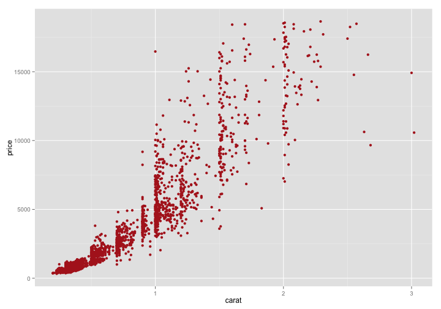
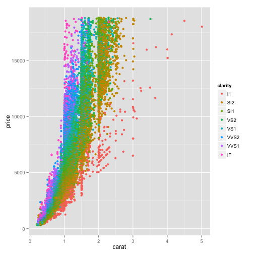

- YAML是一种标记语言，也就是生成.Rmd的最开始部分，author、title、subtitle等
- 这部分指定展示文件的一些属性
- 比如framework，决定了生成html的方式,默认是io2012, 可以切换revealjs,例子
- 注意：切换不同framework生成的子文件不会自动删除，可能导致文件夹越来越大
- 一些slides展示
学年总结
毕业论文相关
zz 2016.1.20
YAML标记语言
正文编辑
##
- 两个#创建新slide的标题
---
- 结束一个slide使用带空行的三个
--- - 重要的是，当结束一张slide的同时，决定了下一张slide的类别
- 默认就像本张slide是 .class #id
- 所以表示成
--- .class #id
正文使用markdown语法
多级标题示例——1
- 顺序1
- 茶
- 顺序2
- 上茶
- 顺序3
- 上好茶
多级标题示例——2
- 顺序1
- 茶
- 顺序2
- 上茶
- 顺序3
- 上好茶
ggplot示例
ggplot(diamonds, aes(carat, price))+geom_point(color="firebrick")

style设置
- 放在某个slide中，效果仅应用于某个slide
- 另命名一个.css 文件，放在assets文件夹中，应用在所有slides
<style>
.reveal h3 {
color: #c1f192;
text-align: left;
padding-bottom: 50px;
font-family: Impact, sans-serif;
}
</style>
修改layout
- 写一个
layout_name.html文件，设置一种特定的layout - 任何放在assets/layouts中的layout就能被.Rmd文件引用
- 某个slide需要这种layout的话，就在slide开始的---后跟一个
&layout_name
双栏layout示例
现在是中间部分
左边的图

右边的图 
then is back fullwidth,(这里使用中文出错)
动态显现的效果
- io2012 通过 > * 来进行动态显示
- revealjs 通过.fragment进行动态效果（以及脚本）
io2012 通过 > * 来进行动态显示
revealjs 通过.fragment进行动态效果（以及脚本）
关于widget
- widget可以让你：
- 制作问卷
- 使用数学公式
- 使用 bootstrap framework
- logo 放在 assets > img 文件夹（io2012文件夹有一个默认logo）
- 该文件夹也是放其他展示图片的地方
交互式问答：示例
1+1等于？
- 1
- 2
- 3
- 4
这是个提示
这是一个解释
交互式问答：方法
- YAML 首页部分添加两个模块，widgets : [quiz,bootstrap]
- quiz中的radio是一个交互问答的模块
- bootstrap是一个上色模块
- &radio表示本slide将使用该模块展示，所以不能再加入其他非格式正文
- _2_是隐藏正确结果所用
交互式图形：rCharts示例
- YAML添加外部模块，ext_widgets : {rCharts: [libraries/nvd3]}
- 引入代码进行展示（这里需要rCharts包，github上下载）